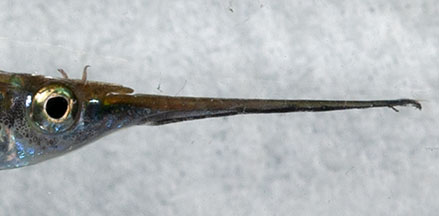
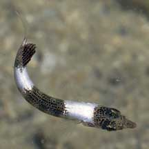
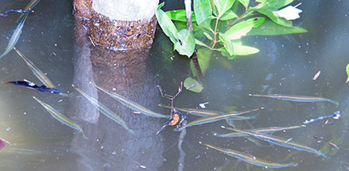

|
|
| fishes text index | photo index |
| Phylum Chordata > Subphylum Vertebrate > fishes |
| Halfbeaks Family Hemiramphidae updated Sep 2020
Where seen? These stick-like fishes are commonly encountered on many of our shores. They swim at the water surface, often quite actively at night. Small ones may be mistaken for floating twigs or other bits of flotsam. What are halfbeaks? Halfbeaks belong to the Family Hemiramphidae. According to FishBase: the family has 12 genera and 85 species. They are found in the Atlantic, Indian and Pacific Oceans. Features: To about 10cm long. Body long and stick-like; generally cylindrical. The halfbeak is so named because its lower jaw is much longer, while its upper jaw is short and triangular. 'Hemi' means half; while 'rhamphos' means beak or bill in Greek. The jaws have several rows of small teeth and the tip of the long, spike-like lower jaw is often brightly coloured. The eyes are relatively large and scales are large too. Sometimes mistaken for needlefishes. Needlefishes (Family Belonidae) are usually much longer. The jaws of needlefishes are also elongated and both the upper and lower jaws are of equal length and usually filled with sharp teeth. Young barracuda (Family Sphyraenidae) also appear similar at first glance. Here's more on how to tell apart stick-like fishes commonly seen on our shores. |
 The lower jaw is many times longer than the upper jaw. Sungei Buloh, Dec 03 |
 A young halfbeak? Pulau Hantu, Jan 06 |
| Surface dwellers: It is well adapted
to living at the water surface. Usually darker on the top while the
sides and underside are silvery. Thus its darker blue or green back
blends in with the water surface when above-water predators look down
on it. While at the same time, underwater predators looking up at
it can't really see it well either as its silvery body blends with
the sunlit waters. Its unfish-like body shape also means it is often
dismissed as a floating stick. Some small ones are brown and twig-like. What do they eat? Halfbeaks eat things that float on the surface such as algae, tiny animals like zooplankton and other fishes. Some halfbeak species eat land insects that might fall into the water, while others eat seagrasses and algae. |
 At high tide, often seen under mangrove vegetation. Sungei Buloh, Feb 11 |
 Shadow cast resembles a twig. Pasir Ris, Apr 10 |
| Halfbeak babies: Most halfbeak
lay eggs attached to seaweed in shallow waters. Some, however, may
give birth to live young. In some, fertilisation takes place internally
and the males have modified fins to fertilise the females with. Human uses: Halfbeaks apparently taste good and large species (like the Black-barred halfbeak) are eaten in some places, sold fresh and dried salted. Or they are used as bait fish. They are caught with nets under lights at night. Some freshwater species are popular in the live aquarium trade. Status and threats: Our halfbeaks are not listed among the threatened animals of Singapore. However, like other creatures of the intertidal zone, they are affected by human activities such as reclamation and pollution. |
| Unidentifed Halfbeaks on Singapore shores |
On wildsingapore
flickr
|
| Some Halfbeaks on Singapore shores |

| Family
Hemiramphidae recorded for Singapore from Wee Y.C. and Peter K. L. Ng. 1994. A First Look at Biodiversity in Singapore. *Lim, Kelvin K. P. & Jeffrey K. Y. Low, 1998. A Guide to the Common Marine Fishes of Singapore. ^from WORMS
|
Links
|